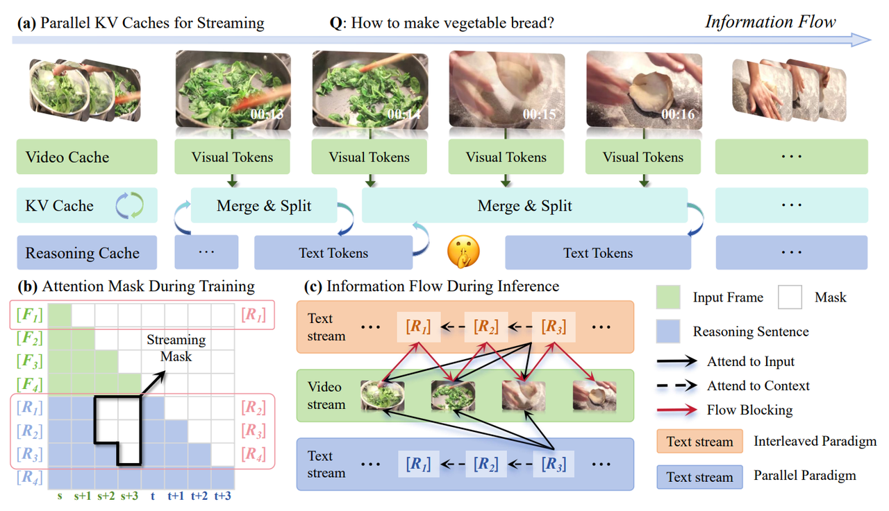
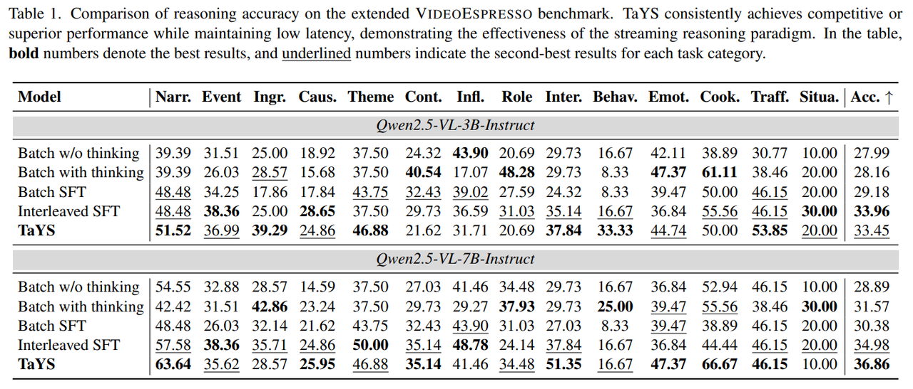
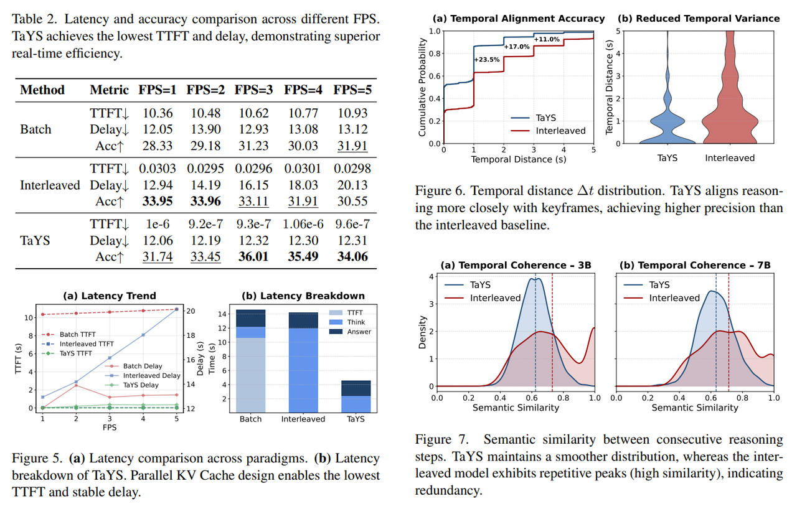

TaYS enables real-time streaming Chain-of-Thought reasoning for large vision-language models.
Large Vision-Language Models (LVLMs) have made significant strides in video reasoning, yet most existing systems rely on a batch inference paradigm that processes the entire video before reasoning begins. This "wait-and-see" approach neglects the inherently streaming nature of real-world video, introducing substantial latency and exacerbating temporal drift. In this paper, we propose Think-as-You-See (TaYS), a framework that shifts LVLMs toward a streaming reasoning paradigm, enabling continuous, incremental inference synchronized with the visual stream. We introduce three key innovations: (1) a streaming attention mask to enforce temporal causality; (2) a decoupled positional encoding strategy to resolve cross-modal index conflicts; and (3) a parallel dual KV-cache mechanism that decouples visual encoding from reasoning generation, enabling concurrent frame ingestion and token decoding. Empirical evaluations on the VideoEspresso benchmark using the Qwen2.5-VL family demonstrate that TaYS improves reasoning accuracy by 2.9%, reduces Time-to-First-Token (TTFT) from 10.6s to near-zero, and cuts reasoning-event deviation by 55%. Our results suggest that aligning LVLM reasoning with the streaming nature of video is a vital step toward responsive, real-time multimodal intelligence.

Overview of the TaYS framework. Parallel video reasoning KV caches enable concurrent visual encoding and reasoning generation.
TaYS is a supervised fine-tuning framework that integrates streaming video CoT generation with streaming training and inference mechanisms. To overcome the intrinsic serialization bottleneck of naive interleaving strategies, we introduce a parallel streaming paradigm termed Think-as-You-See (TaYS).

Comparison with baselines on the extended VIDEOESPRESSO benchmark.

We instantiate TaYS on the Qwen2.5-VL family and evaluate its efficacy across tasks requiring complex event dynamics and causal reasoning. On the extended VideoEspresso benchmark:
@article{tays2026,
title={Think-as-You-See: Streaming Chain-of-Thought Reasoning for Large Vision-Language Models},
author={Zhang, Jialiang and Tong, Junlong and Lin, Junyan and Wu, Hao and Sun, Yirong and Ma, Yunpu and Shen, Xiaoyu},
journal={arXiv preprint arXiv:2603.02872},
year={2026}
}